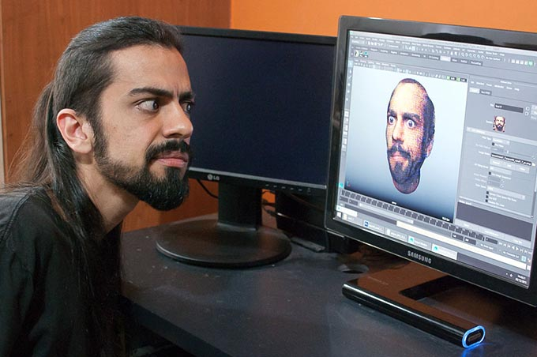

...and how it can convey life.
I studied electrical engineering, trying to understand what made things move.
Then I studied animation, trying to understand how things could seem to be alive.
Getting to know new stuff became my addiction. Photography, music, physical theater, carpentry, even bread making...
I realized it all adds up. It leads to a wider perspective, opening ways for better solutions.
It allow us to defy boundaries and break out of limitations.

I'm an artist and also a technician. I do my best so things can be efficient, so no one has to waste time on boring tasks.
I like to let machines do what they do best so we people can do what is so exclusive to us: telling stories.
"The soul of any kind of a creative art form is... freedom!"
-Glen Keane
I'm constantly trying to breath life into unusual things.
Because it reminds me that being alive can be extraordinary.
Like when we stumble upon something so unique that we are left... completely mesmerized.
Those are the moments that stand out, the ones we remember.
Life, on all its fragility, can be quite inspiring.
I study life.
So I can inspire others.